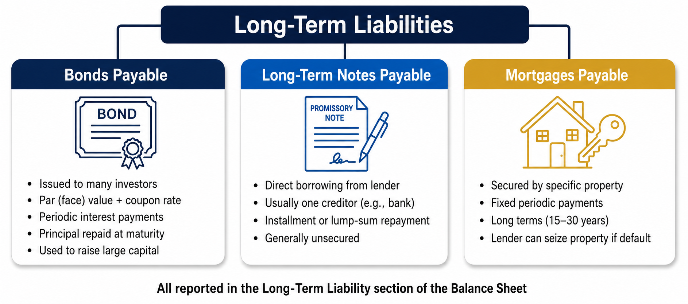
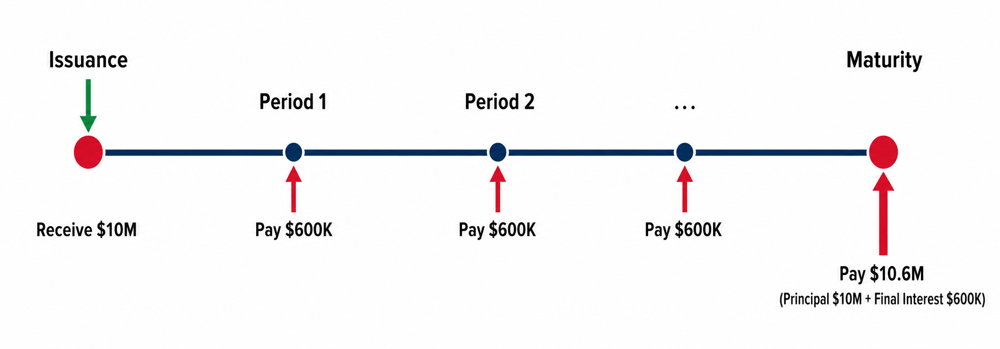
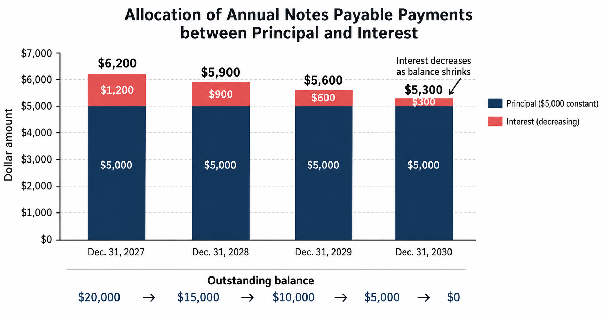
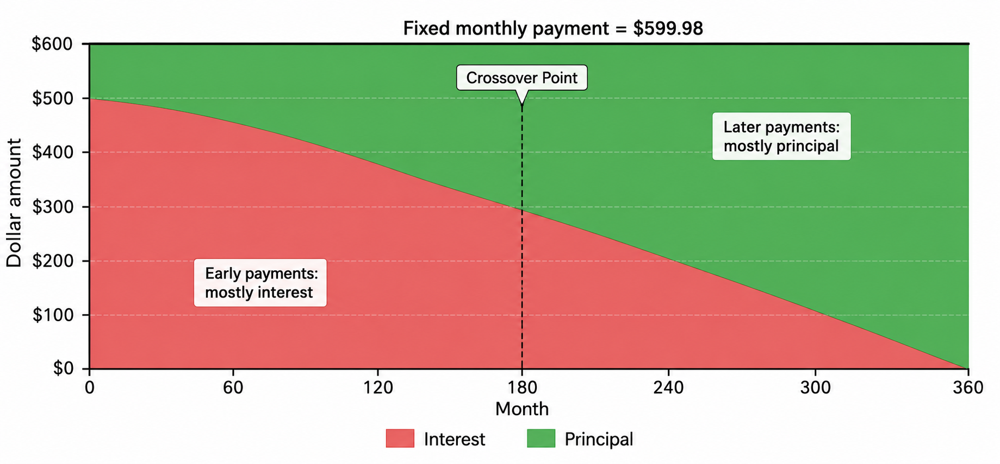
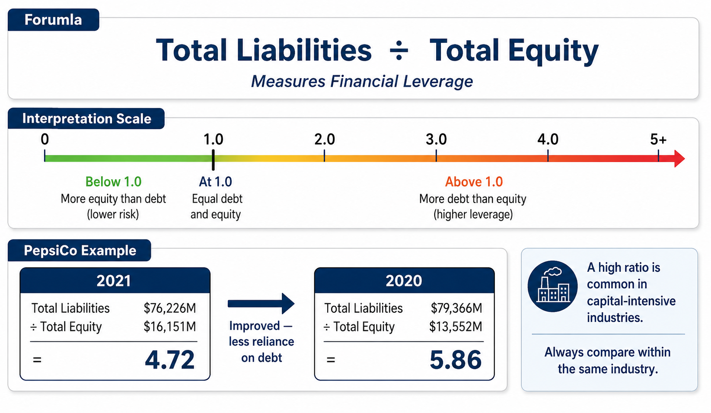

Bonds Payable, Long-Term Notes Payable, Mortgages Payable, and Financial Leverage
Each link opens the lecture video at that topic. Timestamps are approximate — a topic may begin a few seconds before or after the mark, so step back a little if you land mid-sentence.
In Chapter 11, we examined current liabilities—obligations due within one year or one operating cycle, whichever is longer. Now we turn to the other side of the balance sheet: long-term liabilities. These are obligations that extend beyond one year (or one operating cycle) and are reported in the long-term liability section of the balance sheet.
Long-Term Liabilities — Liabilities that do not need to be paid within one year or within the entity’s operating cycle, whichever is longer. They appear below current liabilities on the balance sheet. The three most common types are:
Companies borrow long-term for many reasons: to finance the purchase of property and equipment, to fund expansion projects, or to restructure existing debt. Understanding how these obligations are recorded, paid, and reported is essential to reading any company’s financial statements.

When a company needs to raise a very large amount of capital, it may issue bonds. A bond functions similarly to a promissory note: the issuing company borrows money from investors (bondholders) and promises to repay the principal at a specified maturity date, while making periodic interest payments along the way.
Par Value (Face Value) — The amount printed on the face of the bond certificate. This is the principal amount the issuer promises to repay at maturity.
Coupon Rate (Stated Rate) — The interest rate printed on the bond certificate. It determines the amount of interest the issuer will pay to bondholders each period.
Maturity Date — The date on which the bond issuer must repay the full par value to the bondholders.
Consider a company that issues a bond with a par value of $10,000,000 and a coupon rate of 6%. At the time of issuance, the company receives $10,000,000 in cash from investors. The journal entry is straightforward:
After issuance, the company must make periodic interest payments to bondholders. The interest amount is computed as:
\[ \text{Interest Payment} = \text{Par Value} \times \text{Coupon Rate} \]In our example: \( \$10{,}000{,}000 \times 6\% = \$600{,}000 \) per period. Each time the company makes an interest payment, it records:
The timeline below illustrates the cash flows over a bond’s life. The issuer receives cash at issuance, pays interest each period, and repays the principal plus the final interest payment at maturity.

At the maturity date, the company must repay the full face value of the bond plus the final interest installment. The journal entry at maturity:
In this introductory example, we assumed the coupon rate equals the market interest rate, so the bond was issued at exactly par value. In practice, if the market rate differs from the coupon rate, the bond may be issued at a premium (above par) or a discount (below par). These more complex scenarios—including premium/discount amortization—are covered in depth in upper-level accounting courses.
For now, focus on the core concept: companies issue bonds to raise large sums of capital, record the cash received and the liability at issuance, and make periodic interest payments until the principal is repaid at maturity.
A long-term note payable functions similarly to a bond: the company borrows money and pays interest. The key difference is in size and structure. While bonds are typically issued in large denominations to many investors, notes payable represent a direct borrowing arrangement, usually with a single lender such as a bank.
There are two common repayment structures for notes payable:
Regardless of the repayment structure, the company must always accrue interest expense over time, because interest accrues on the outstanding balance.
At the date of issuance, the journal entry is identical to that of a bond: the borrower receives cash and records the liability.
On December 31, 2026, Smart Touch Learning signs a $20,000 note payable. The note is due in four annual installments of $5,000, plus 6% interest on the unpaid balance, to be paid each December 31.
An amortization schedule is a table that details how each loan payment is allocated between principal (paying down the debt) and interest (the cost of borrowing). It also tracks the beginning and ending balances of the loan for each period.
Interest is always computed on the beginning balance of the period:
\[ \text{Interest Expense} = \text{Beginning Balance} \times \text{Interest Rate} \times \text{Time} \]For an annual note with annual payments, Time = 1 year, so the formula simplifies to Beginning Balance × Interest Rate.
Let’s build the amortization schedule for the Smart Touch Learning note. The company repays $5,000 of principal each year, plus interest computed on the beginning balance at 6%.
| Date | Beginning Balance |
Interest Expense (6%) |
Principal Payment |
Total Cash Payment |
Ending Balance |
|---|---|---|---|---|---|
| Dec. 31, 2026 | Note issued | $20,000 | |||
| Dec. 31, 2027 | $20,000 | $1,200 | $5,000 | $6,200 | $15,000 |
| Dec. 31, 2028 | $15,000 | $900 | $5,000 | $5,900 | $10,000 |
| Dec. 31, 2029 | $10,000 | $600 | $5,000 | $5,600 | $5,000 |
| Dec. 31, 2030 | $5,000 | $300 | $5,000 | $5,300 | $0 |
Notice that the total cash payment decreases each year even though the principal payment stays at $5,000. Why? Because the interest expense is computed on the beginning balance, which gets smaller each year. As you pay down the principal, you owe less interest.
Also, be careful with dates: the ending balance on December 31, 2027, is exactly the beginning balance on January 1, 2028. These are two names for the same number at the same point in time.
Let’s walk through the first year step by step:
For the second year, we start with the new beginning balance of $15,000: \( \$15{,}000 \times 6\% = \$900 \) in interest expense, and the total cash payment is \( \$5{,}000 + \$900 = \$5{,}900 \). The pattern continues until the note is fully paid off.
When Smart Touch Learning makes its first installment payment on December 31, 2027, the journal entry records three things: (1) the reduction of the note’s principal, (2) the interest expense for the period, and (3) the total cash paid.
After this entry, the Notes Payable balance decreases from $20,000 to $15,000. The same journal entry structure is repeated for each subsequent payment, with the interest amount declining each year as shown in the amortization schedule.

A mortgage payable is a specific type of long-term debt that is secured by a specific asset—typically real property such as land or a building. Mortgages are fundamentally similar to notes payable, but they differ in two important ways:
Mortgage Payable — A long-term debt obligation that is secured by a security interest in specific property. The borrower makes equal periodic payments (typically monthly) over an extended term. If the borrower defaults, the lender can seize the pledged property.
On December 31, 2026, Smart Touch Learning purchases a building for $150,000. They pay $49,925 in cash and sign a 30-year mortgage for the remaining $100,075 at 6% annual interest, payable in 360 monthly payments (30 × 12) of $599.98 each, beginning January 31, 2027.
At the time of acquisition, Smart Touch Learning records the full cost of the building and shows how the purchase was financed:
A mortgage amortization schedule works exactly like the notes payable schedule, except the total payment is fixed each period. Because the total payment remains constant while the outstanding balance decreases, the allocation between interest and principal shifts over time:
The interest for each month is computed using the monthly interest rate:
\[ \text{Monthly Interest} = \text{Beginning Balance} \times \frac{\text{Annual Rate}}{12} \]Let’s examine the first few payments of Smart Touch Learning’s mortgage:
| Payment Date |
Beginning Balance |
Fixed Monthly Payment |
Interest Expense |
Principal Reduction |
Ending Balance |
|---|---|---|---|---|---|
| Jan. 31, 2027 | $100,075.00 | $599.98 | $500.38 | $99.60 | $99,975.40 |
| Feb. 28, 2027 | $99,975.40 | $599.98 | $499.88 | $100.10 | $99,875.30 |
| Mar. 31, 2027 | $99,875.30 | $599.98 | $499.38 | $100.60 | $99,774.70 |
| … | … | $599.98 | ↓ | ↑ | … |
| Payment 360 | ≈ $597 | $599.98 | ≈ $3 | ≈ $597 | $0.00 |
Notice how the proportion of each payment allocated to interest versus principal changes dramatically over the life of the mortgage:
In the early years of a mortgage, the vast majority of each payment goes toward interest, not principal. In our example, only $99.60 out of the $599.98 first payment actually reduces the debt—that’s less than 17%! This is why it takes so long to build equity in a home during the early years of a mortgage.
As the loan matures, this relationship gradually reverses: by the final payment, almost the entire amount goes to principal.
The journal entry for a mortgage payment has the exact same structure as a notes payable installment: debit Interest Expense and Mortgage Payable, credit Cash.

While you may not need to calculate mortgage payments by hand on an exam, understanding how they are computed is highly practical for real-world financial decision-making.
Spreadsheet programs like Microsoft Excel and Google Sheets include a built-in PMT (Payment) function that calculates the fixed periodic payment for a fully amortizing loan.
=PMT(rate, nper, pv, [fv], [type])
Suppose you have a $20,000 mortgage at 3% annual interest, paid over 5 years with monthly payments (60 total payments).
=PMT(3%/12, 60, -20000, 0) = $359.37
This tells you that a fixed monthly payment of $359.37 will fully pay off the $20,000 loan in exactly 60 months, including all interest.
Once you know the fixed payment, you can build the full amortization schedule by repeating the same process we used for the mortgage example:
If you don’t know the PMT function, you can use Excel’s Goal Seek tool (Data → What-If Analysis → Goal Seek). Set up the amortization table with a placeholder payment amount, then tell Goal Seek to set the final balance cell to zero by changing the payment amount cell. Excel will automatically calculate the correct payment of $359.37.
When companies take on long-term debt, investors and creditors want to know how much of the company’s assets are financed by debt versus equity. The debt to equity ratio provides this information.
This ratio measures financial leverage—the extent to which a company relies on borrowed funds to finance its operations.
• Ratio > 1: The company finances more of its assets with debt than equity
(higher leverage, higher risk).
• Ratio < 1: The company relies more on equity than debt
(lower leverage, lower risk).
PepsiCo reported the following on its Fiscal 2021 Annual Report (in millions):
| Dec. 25, 2021 | Dec. 26, 2020 | |
|---|---|---|
| Total Liabilities | $76,226 | $79,366 |
| Total Equity | $16,151 | $13,552 |
Computing the ratio for each year:
\[ 2021\!: \quad \frac{\$76{,}226}{\$16{,}151} = 4.72 \qquad\qquad 2020\!: \quad \frac{\$79{,}366}{\$13{,}552} = 5.86 \]Both years show ratios well above 1, indicating that PepsiCo relies heavily on debt financing. However, the ratio improved from 5.86 in 2020 to 4.72 in 2021, meaning PepsiCo reduced its reliance on debt relative to equity.
A high debt to equity ratio is not necessarily “bad.” Many successful companies intentionally use significant debt financing because the cost of debt (interest) is often lower than the cost of equity, and interest expense is tax-deductible. However, higher leverage means higher risk: if the company cannot generate enough cash flow to service its debt, it could face financial distress. Analysts always evaluate this ratio in the context of the industry—capital-intensive industries (utilities, real estate) naturally carry higher ratios than technology companies.
